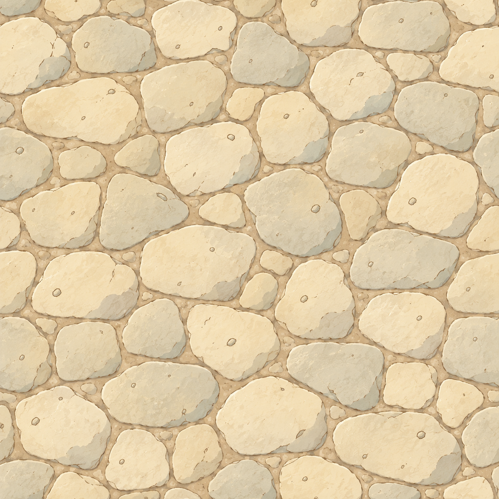
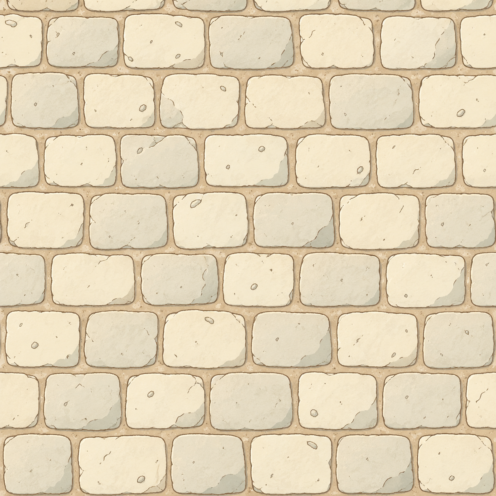
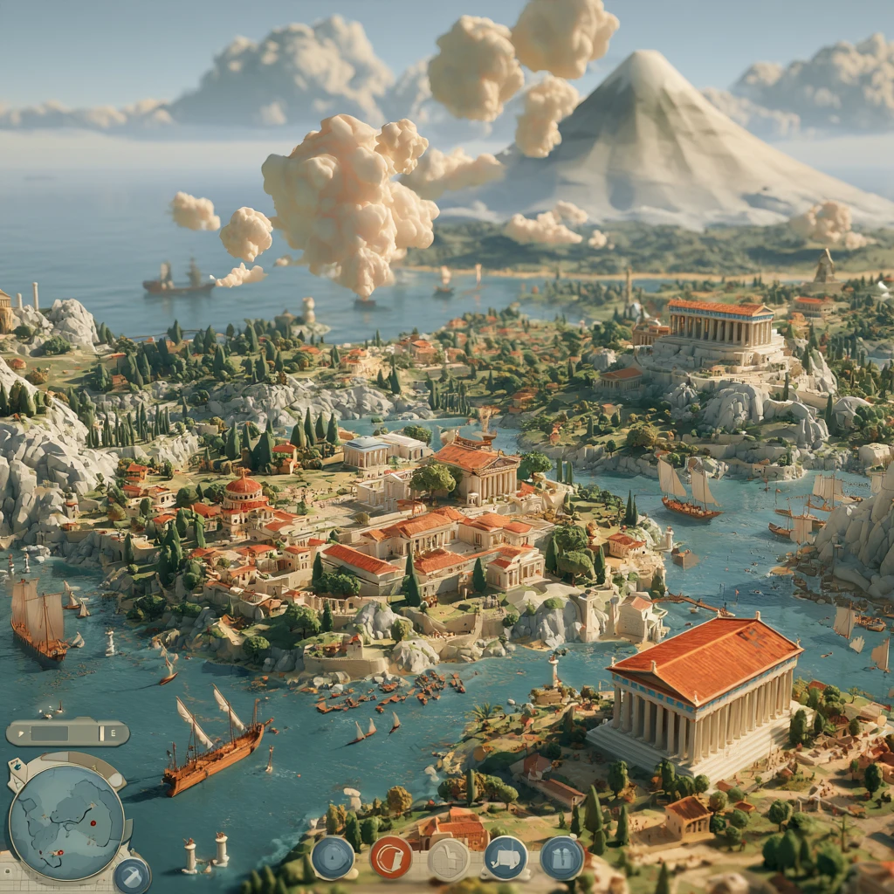

Stone road · less sand, clearer limestone

Before · sandy cream
Revised · neutral limestone

Approved plot linework

Approved world palette
Revised material · mirrored 2×2 repeat
 Revised · neutral limestone
Revised · neutral limestone